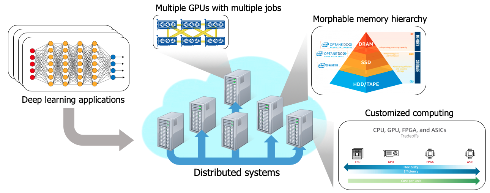

관심이 있는 학생들은 안정섭 교수에게 이메일 (jsahn at ajou.ac.kr) 보내주세요. 이메일에 성적표와 간단한 이력서를 첨부해주시면 좋습니다.
아래의 리스트는 현재 관심이 있는 연구주제를 간단하게 적어보았습니다.

- Systems for AI and Machine Learning
- Large scale에서 GPU를 기반으로 하는 deep learning training을 효율적으로 지원하기 위한 (런타임, 클러스터) 시스템 연구
- Deep learning inference 과정을 가속하기 위한 하드웨어 및 소프트워어 연구
- HW & SW Techniques for Non-volatile Memory
- NVM (e.g., Intel Optane DC memory)를 효과적으로 사용하기 위한 시스템 연구
- DRAM, NVM, SSD등의 메모리 계층 구조에 대한 최적화 연구
- System Software Optimization
- 스케줄링, 메모리, 스토리지에 관련된 리눅스 커널 코드 해킹